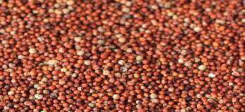
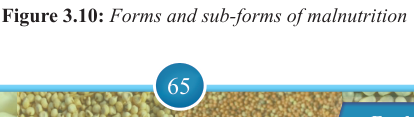
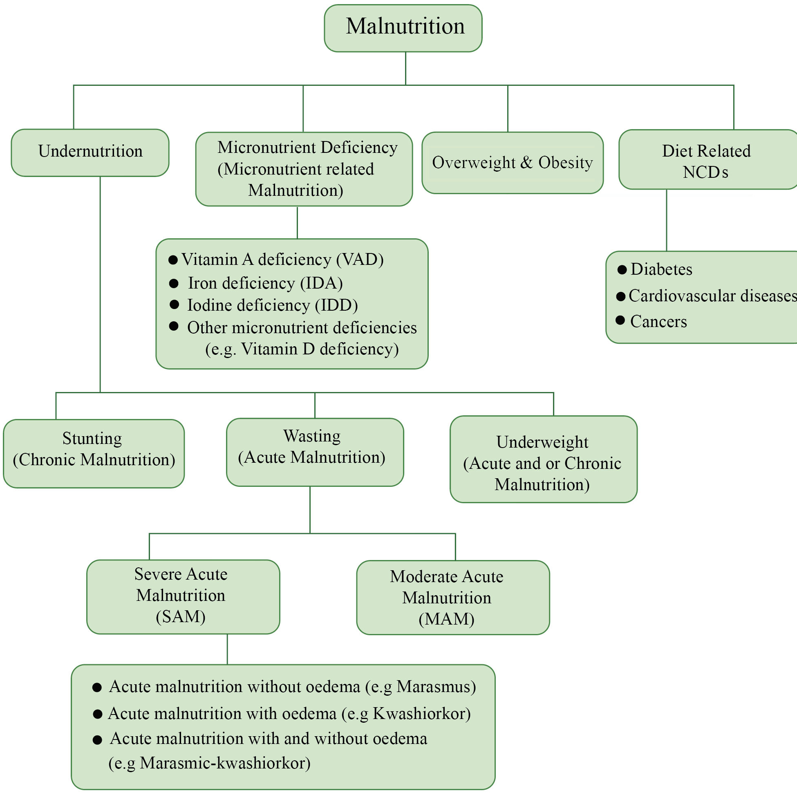
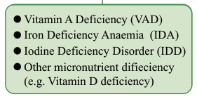

65


Food and Human Nutrition

Form Two
Preventive and control measures of
DR-NCDs include observing healthy eating habits such as increasing the consumption
of
fruits,
vegetables
and high fibre foods like legumes, whole grains and nuts and reducing consumption of junk foods such as fatty foods and sweetened or sugary foods.
Observe healthy lifestyles by achieving
and maintaining a healthy body weight, performing regular physical activities, moderately using alcoholic beverages and avoiding the use of tobacco. In addition, early screening, detection and timely management of DR-NCDs are recommended. Figure 3.10 shows forms and sub-forms of malnutrition.


Vitamin A Deficiency (VAD)
Iron Deficiency Anaemia (IDA)
Iodine Deficiency Disorder (IDD)
Other micronutrient difieciency
(e.g. Vitamin D deficiency)
Figure 3.10: Forms and sub-forms of malnutrition
17/09/2025 16:30